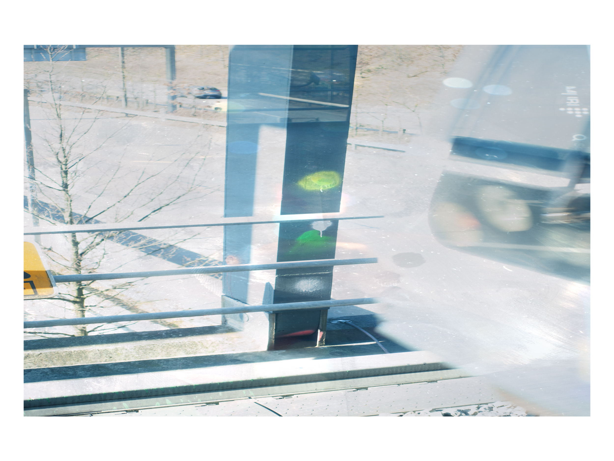
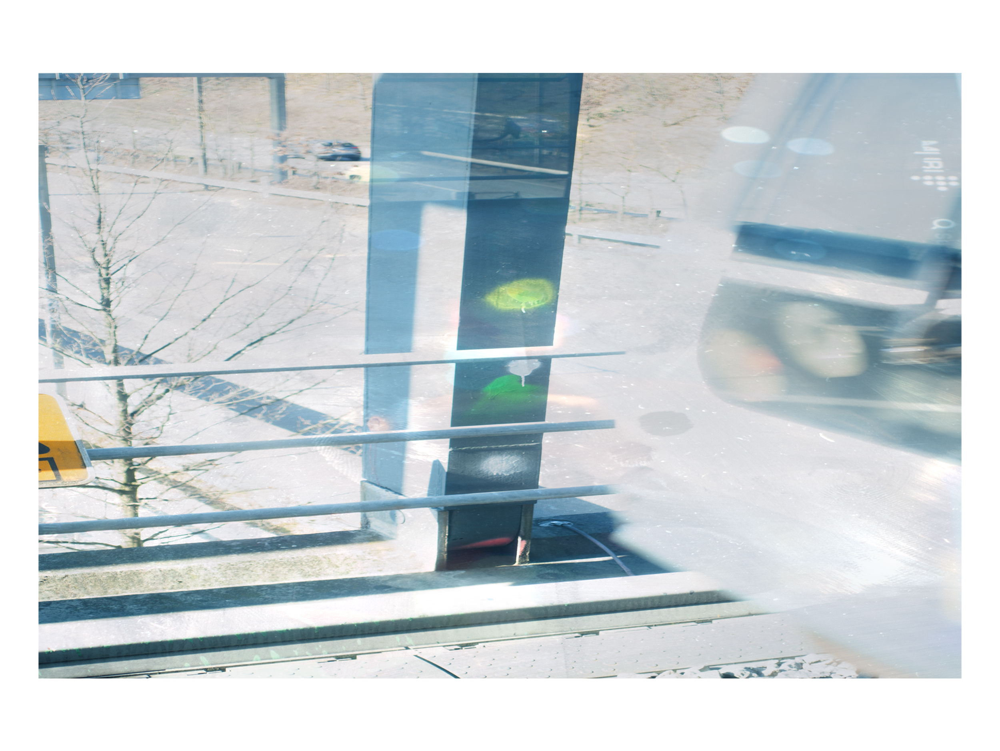

re-assembli
2022
Installation
re-assembli is an installation that investigates the reconstruction of natural forms through artificial means. The work presents a series of landscape-like formations that have been meticulously crafted to mimic organic structures while simultaneously revealing their constructed nature.
Through this tension between the natural and the artificial, re-assembli questions our understanding of authenticity and challenges conventional notions of representation in contemporary art.
Exhibition History
- Museum of Modern Art, Stockholm, Sweden (2023)
- Contemporary Arts Center, Cincinnati, OH (2022)
Materials
Found objects, clay, resin, digital projections
Dimensions
Variable, installation approximately 5m × 8m × 3m